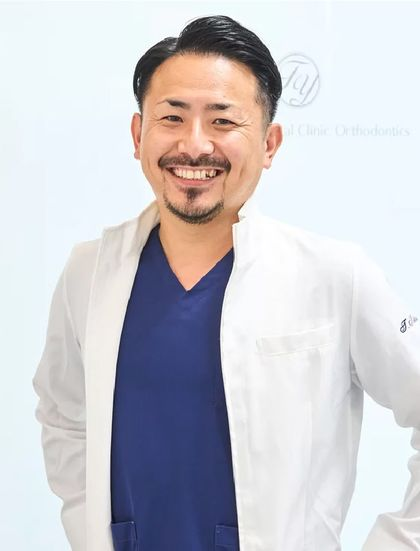

名古屋・栄 インプラント・入れ歯のご相談
入れ歯・インプラントで
迷ったら、
CT撮影込みの
無料相談から。

院長北村 隆典 YouTubeで治療を解説しています
骨の状態と費用の総額を、治療を始める前にご説明します。
- 当日の契約なし
- ご家族の同席歓迎
- 相談だけでもOK

- 入れ歯が合わない・痛い・外れる
- 歯がグラグラする・歯周病
- 他院で「骨が足りない」と言われた
- インプラントの費用や手術が不安
無料相談で行うこと
- お悩み・ご希望を伺います入れ歯や今の歯の状態、ご希望の治療
- CTを撮影します（無料）骨の量・神経や血管の位置を立体的に確認
- 治療の選択肢と、費用の総額をご説明期間・お支払い方法・リスクも
- その日に契約はお願いしませんご家族と相談のうえ、お決めください
担当する医師

院長北村 隆典
「その場しのぎではなく、将来にわたり責任を持てる治療を」
愛知学院大学 歯学部 卒業／歯科オーラルクリニックエクラ 副院長などを経て現職。所属学会：日本口腔インプラント学会・日本歯周病学会
医療法人スマイル 理事長尾崎 隆MALO CLINIC Education コース修了（All-on-4・インプラント）

麻酔医河合 温子すべての手術に立ち会い、静脈内鎮静法・全身麻酔に対応
当院のインプラント治療
- CT×X-Guide手術前にシミュレーションし、手術中も位置・角度・深さを確認
- 麻酔医が立ち会いうとうとした状態で受けられる静脈内鎮静法・全身麻酔
- 骨が少ない方にもオールオン4・ザイゴマインプラントに対応
- 治療後も10年保証半年に1度の定期検診が条件
費用の目安
自由診療（公的医療保険の適用外）です。診断のあと、治療を始める前に総額をご説明します。
| 初回相談・CT撮影 | 無料 |
|---|---|
| インプラント（1本） | 319,000円（税込）税抜 290,000円デンタルローン 月々4,600円台〜 |
| オールオン4（片あご） | 1,925,000円（税込）税抜 1,750,000円デンタルローン 月々19,000円台〜 |
- 手術費用の目安です（CT撮影・画像診断を含みます）。麻酔や最終的な歯（上部構造）、エックスガイド使用料（使用する場合 55,000円・税込）などが別途かかる場合があります。
- デンタルローンはローン会社の審査があります。月々のお支払額は、回数・金利・頭金などにより異なります。
- 分割払い・クレジットカード
- 医療費控除の対象
- 10年保証（定期検診が条件）
よくあるご質問
Q相談だけでも大丈夫ですか？ その日に契約を勧められませんか？
ご相談だけでもまったく問題ありません。初回のご相談とCT撮影は無料で、その日に契約をお願いすることはありません。ご家族と相談してからお決めください。
Q手術が怖いです。痛みはありますか？
局所麻酔を行ったうえで手術を進めます。すべての手術に麻酔医が立ち会い、うとうとした状態で受けられる静脈内鎮静法や、全身麻酔にも対応しています。術後の痛み・腫れには個人差があります。
Q高齢でも、持病があっても受けられますか？
年齢だけを理由に治療ができないということはありません。糖尿病・高血圧などがある方も、状態が安定していれば治療できる場合があります。お薬手帳をお持ちください。
Q他院で「骨が足りない」と言われました。
オールオン4は、骨の少ない部分を避けて治療できる場合があります。上あごの骨が少ない方には、ザイゴマインプラントという選択肢もあります。まずはCTで骨の状態を確認させてください。
Q土日に相談できますか？
診療は平日（月〜金）のみです。Webの予約リクエストとLINEは24時間受け付けています。当院からお電話で日時を確定します。
無料相談のご予約
ご希望の日時を選んで送信してください。当院からお電話で日時を確定します。
- 当日の契約なし
- ご家族の同席歓迎
- 相談だけでもOK
アクセス・診療時間
- 所在地
- 愛知県名古屋市中区錦3-15-33 アルティメイト錦大津通3階
地図を開く - アクセス
- 地下鉄「栄駅」2番出口から徒歩3分
- 診療時間
- 月〜金 9:30〜12:30／14:30〜19:00
休診日：土曜・日曜・祝日 - 電話
- 052-957-3357（受付 月〜金 9:00〜19:00）
治療に伴うリスク・副作用について
- インプラント治療・オールオン4は、公的医療保険が適用されない自由診療です。
- 外科手術を伴うため、術後に痛み・腫れ・内出血などが生じることがあります。
- 骨の量や全身の状態によっては治療を受けられない場合や、骨造成などの追加処置が必要になる場合があります。
- オールオン4では、骨の状態などにより、手術当日に仮歯を装着できない場合があります。
- 糖尿病などの全身疾患や喫煙は、治療の経過に影響を及ぼす可能性があります。
- インプラント周囲炎を防ぐため、毎日のセルフケアと定期的なメンテナンスが必要です。
- 静脈内鎮静法・全身麻酔では、まれに血圧の変動や呼吸抑制などが起こる可能性があります。
- 治療期間・通院回数・費用は、お口の状態により異なります。